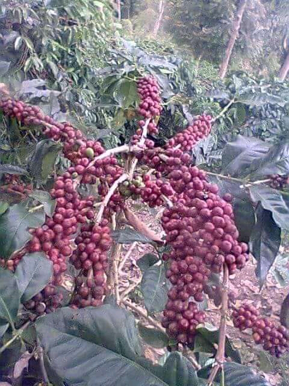
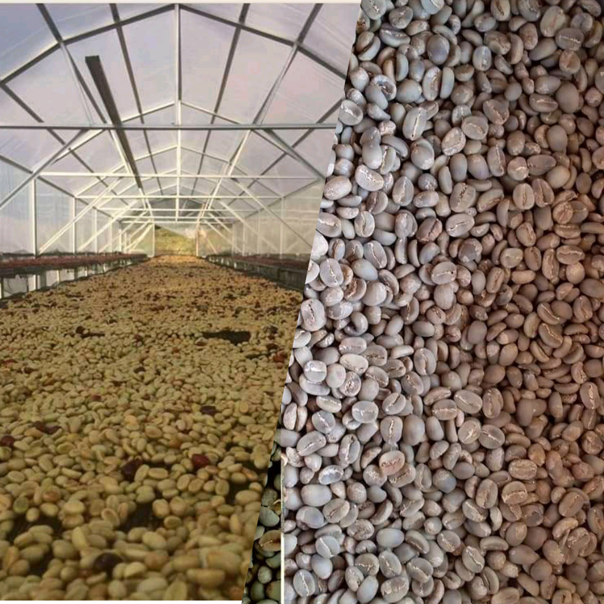
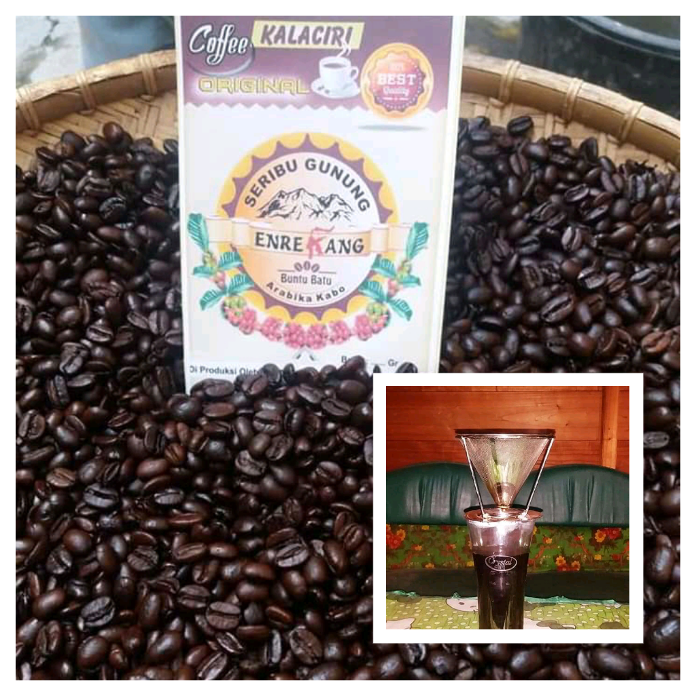

Panen

Buah kopi Arabika yang telah dipanen atau dipetik harus segera diolah untuk mencegah
pembusukan yang dapat mempengaruhi cita rasa kopi Arabika. Hasil panen dipilih berdasarkan
kriteria tertentu. Masyarakat Potokullin pada umumnya mengolah biji kopi Arabika dengan cara dipabrik
ini adalah tahap pemisahkan antara kulit kopi basah dengan biji kopi. Setelah biji kopi dipisahkan
dari kulitnya, biji kopi yang basah dibiarkan dalam palstik selama kurang lebih 1 atau 2 hari lamanya,
namun masyarakat di sana lebih sering menggunakan karung dalam proses ini. Tujuan dari
adalah untuk memisahkan antara lendir kopi dengan biji kopi agar proses
pencucian dan pengeringan lebih mudah. Proses pengeringan sekitaran 2 sampai 3 hari
agar hasil yang kita dapatkan lebih maksimal.
Proses

Agar peroses pengeringan lebih cepat,
masyarakat di Desa potokkulin biasanya menggunakan rumah yang di bungkus plastik
transparan yang biasa di kenal dengan Green House.
Tujuannya tidak lain agar sinar matahari lebih mudah menembus atap yang terbuat dari
plastik transparan untuk memanasi kopi arabika yang sementara
dikeringkan. Setelah tahap pengeringan pertama, selanjutnya proses pemilihan kualitas
kopi Arabika sesuai yang diinginkan. Tahap selanjutnya adalah pengupasan kulit tanduk.
Dalam proses ini masyarakat di sana melakukannya dengan cara ditumbuk, namun dalam
cara ini harus dilakukan dengan telaten untuk mengurangi kerusakan pada biji
kopi. Hasil pengupasan ini dikenal dengan kopi tanduk yg berwarna hijau.
Setelah proses pengupasan tanduk dilakukan, tahap selan selanjutnya adalah
proses pengeringan selama dua kali. Tujuannya adalah agar kopi yang disimpan
benar-benar kering dan tidak berjamur sebelum nantinya dilakukan proses Roasting.
Roasting dan penyeduhan

Setelah melalui proses yang bgitu panjang, sampailah pada tahap Roasting.
Biji kopi tanduk yang benar-benar kering selanjutnya disangrai. Tujuan dari pada Roasting
ini adalah untuk menurunkan kadar air biji kopi tanduk dan membentuk aroma cita rasa
khas kopi arabika potokkulin. Masyarakat di desa Potokullin menggunakan alat khusus
yang dirancang secara mandiri. Dalam proses roasting tersebut mereka menggunakan alat yang terbuat
dari bahan logam atau besi berbentuk seperti tabung yang memudahkan proses
roasting secara manual. Dalam proses tersebut perlu juga tingkat kehati-hatian
agar kopi yang dihasilkan dapat berkualitas dan tidak mengurangi aroma cita rasa khas
kopi. Biji kopi yang selesai disangrai biasanya berwarna kecoklatan .
Setelah proses roasting atau penyangraian dilakukan, selanjutnya adalah
tahap penghalusan atau pembubukan biji kopi sangrai. Tahap ini dilakukan dengan
mengguakan penghalus blender atau mesin penghalus. Namun masyakat di Desa tersebut
biasanya menghaluskan kopi sangrai dengan cara ditumbuk dan menggunakan
blender penghalus.